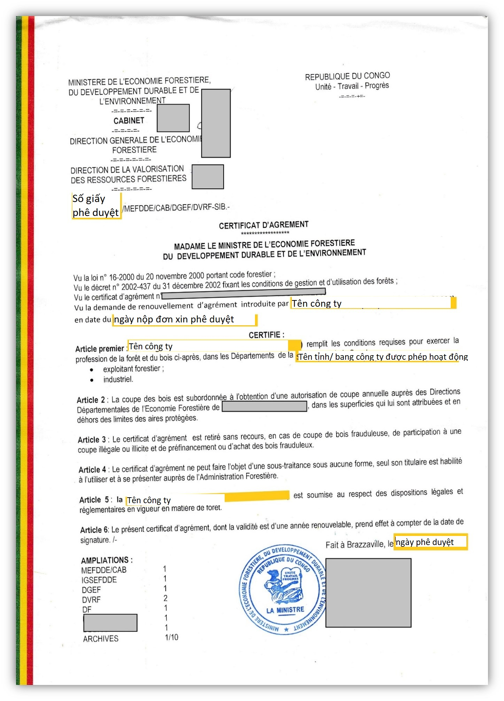

Implementing Timber Leglity Assurance Systems
A guide to comply with timber legality requirements in Congo and to support due diligence


CONGO

Quy định gỗ hợp pháp của Cộng hòa Công-gô
Cộng hòa Công-gô đã ký Hiệp định Đối tác Tự nguyện với Liên minh Châu u. Định nghĩa về tính hợp pháp và các công cụ được sử dụng để đảm bảo tính hợp pháp của các tổ chức, cá nhân trong lĩnh vực lâm nghiệp được nêu trong Phụ lục II của Hiệp định. Nó bao gồm hai ma trận: một ma trận để đánh giá tính hợp pháp của gỗ sản xuất trong rừng tự nhiên, và một ma trận đánh giá tính hợp pháp của gỗ rừng trồng. Bằng cách nhận thức được các quy định pháp luật ở Cộng hòa Công-gô được nêu rõ dưới đây, các cơ quan thực thi pháp luật và các nhà nhập khẩu có thể thực hiện các biện pháp kiểm soát để thúc đẩy gỗ được khai thác, vận chuyển và buôn bán hợp pháp từ Cộng hòa Công-gô. Các nhà nhập khẩu và cơ quan xác minh có thể tham khảo hoặc sử dụng thông tin này trong việc thực hiện trách nhiệm giải trình.
Gợi ý xây dựng và thực hiện trách nhiệm giải trình cho các nhà nhập khẩu
Trách nhiệm giải trình là gì?

Phát triển các hệ thống trách nhiệm giải trình
Thực hiện trách nhiệm giải trình
Các tài liệu sau đây được chọn theo định nghĩa gỗ hợp pháp của Cộng hòa Công-gô và/ hoặc các quy định pháp luật trong các giai đoạn khác nhau của chuỗi cung ứng.
Giấy phép quản lý rừng và khai thác gỗ
Giấy phép quản lý rừng và khai thác gỗ phải do Bộ trưởng Bộ Kinh tế lâm nghiệp (Ministère de l'Economie Forestière) ký, cấp cho các công ty quản lý rừng và khai thác gỗ. Cần kiểm tra tên công ty trên giấy phép, lĩnh vực hoạt động, ký tên, đóng dấu và ghi ngày tháng phù hợp. (Tên tài liệu gốc: Certificat d’agrément en tant qu’exploitant forestier/ Giấy phép quản lý rừng và khai thác gỗ)
Giấy phép khai thác hàng năm
Giấy phép khai thác hàng năm phải do Cục trưởng Cục Kinh tế Lâm nghiệp tỉnh thuộc Bộ Kinh tế lâm nghiệp ký, cấp cho tất cả các chủ sở hữu giấy phép và nhượng quyền khai thác giới hạn trữ lượng gỗ theo loài và lượng khai thác cho phép hàng năm. Cần kiểm tra cập nhật giấy phép khai thác, chủ sở hữu giấy phép đúng với chủ sở hữu nhượng quyền, diện tích khai thác theo kế hoạch quản lý, chương trình quản lý 5 năm, đúng khối lượng và loài giao dịch.


Phê duyệt hợp đồng nhượng quyền (Lệnh của Bộ trưởng)
Hợp đồng nhượng quyền được Bộ trưởng Bộ Kinh tế lâm nghiệp ký phê duyệt cho các chủ rừng. Cần kiểm tra lệnh này đã được đăng công báo, thời hạn ưu đãi 15-25 năm.
Quy cách kỹ thuật của hợp đồng nhượng quyền
Quy cách kỹ thuật của hợp đồng nhượng quyền phải do Bộ trưởng Bộ Kinh tế lâm nghiệp ký, ban hành cho các công ty. Cần kiểm tra văn bản này được ký tên, đóng dấu, nghĩa vụ của người được nhượng quyền.
Biên bản cuộc họp xác nhận kế hoạch quản lý
Biên bản cuộc họp xác nhận kế hoạch quản lý phải do đại diện của Chính quyền tỉnh và Bộ Kinh tế lâm nghiệp ký. Cần kiểm tra văn bản này được ký tên, ghi ngày tháng.
Kế hoạch quản lý
Kế hoạch quản lý phải do Bộ Kinh tế lâm nghiệp và công ty lưu giữ. Cần kiểm tra kế hoạch quản lý có phù hợp mẫu được duyệt, có các nghiên cứu sơ bộ (sinh thái, kinh tế, xã hội), ý kiến tham vấn của cộng đồng địa phương, xác nhận của các bên liên quan.
Chương trình quản lý 5 năm
Chương trình quản lý 5 năm phải do Bộ Kinh tế lâm nghiệp và công ty lưu giữ, có chữ ký của Ủy ban liên Bộ. Cần kiểm tra chương trình đã được cấp thẩm quyền phê duyệt, nội dung phù hợp kế hoạch quản lý (diện tích khai thác, hoạt động chính).
Phê duyệt báo cáo nghiên cứu tác động môi trường và xã hội
Cần kiểm tra thời điểm thực hiện nghiên cứu, báo cáo phải được Bộ trưởng Bộ Môi trường ký và đóng dấu, cần đối chiếu với Kế hoạch quản lý môi trường và xã hội kèm theo.
Thỏa thuận phát triển và chuyển đổi (CAT) hoặc Thỏa thuận chuyển đổi công nghiệp (CTI)
Thỏa thuận phát triển và chuyển đổi (CAT) hoặc Thỏa thuận chuyển đổi công nghiệp (CTI) được phê duyệt bằng một lệnh của Bộ Kinh tế Lâm nghiệp cho đơn vị lâm nghiệp. Cần kiểm tra chữ ký, con dấu, ngày hiệu lực của thỏa thuận.
Kế hoạch phát triển
Kế hoạch phát triển của một Đơn vị quản lý rừng (UFA)/ Đơn vị khai thác rừng (UFE) được phê duyệt bằng một Nghị định. Cần kiểm tra thông tin, chữ ký, con dấu, ngày hiệu lực của kế hoạch phát triển.
Giấy phép CITES
Giấy phép CITES phải do Cơ quan quản lý CITES thuộc Bộ Kinh tế Lâm nghiệp cấp cho nhà khai thác gỗ, nhà xuất khẩu gỗ. Cần kiểm tra chữ ký và con dấu, diện tích, loại rừng trên giấy phép khai thác, số lượng và quy cách gỗ khai thác.
Biên lai nộp thuế trực thu và thuế gián thu đến hạn
Cần kiểm tra các khoản thuế như thuế doanh nghiệp đặc biệt (TSS), thuế công ty (IS) và thuế thu nhập đối với tài sản có thể chuyển nhượng (IRVM) trên các biên lai nộp thuế.
Giấy chứng nhận hợp quy
Giấy chứng nhận hợp quy phải do Sở Hành chính và Thương mại ký, đóng dấu, cấp cho nhà xuất khẩu. Cần Kiểm tra chữ ký, con dấu, ngày ký, loài gỗ, khối lượng, giá trị, điểm đến trên giấy chứng nhận.

Giấy chứng nhận xuất xứ
Giấy chứng nhận xuất xứ phải do Phòng Lãnh sự cấp tỉnh ký, cấp cho nhà xuất khẩu gỗ. Cần kiểm tra chữ ký, con dấu, chủng loại sản phẩm, khối lượng/ trọng lượng, cảng đi, cảng đến.
Giấy chứng nhận xác minh xuất khẩu
Giấy chứng nhận xác minh xuất khẩu phải do Giám đốc Cơ quan kiểm soát xuất khẩu lâm sản (Service de Contrôle des Produits Forestiers à l'Exportation-SCPFE) ký, cấp cho nhà xuất khẩu. Cần kiểm tra chữ ký, con dấu, ngày phát hành, loại sản phẩm, khối lượng đúng với thực tế.
Giấy chứng nhận hành nghề
Cần kiểm tra tài liệu còn hiệu lực và đã được Bộ Kinh tế Lâm nghiệp ký và đóng dấu. Đồng thời các chi tiết có trong giấy chứng nhận phải phù hợp với các hoạt động chế biến.
Thỏa thuận phát triển và chuyển đổi (CAT) hoặc Thỏa thuận chuyển đổi công nghiệp (CTI)
Thỏa thuận phát triển và chuyển đổi (CAT) hoặc Thỏa thuận chuyển đổi công nghiệp (CTI) được phê duyệt bằng một lệnh của Bộ Kinh tế Lâm nghiệp cho đơn vị lâm nghiệp. Cần kiểm tra chữ ký, con dấu, ngày hiệu lực của thỏa thuận.
Phê duyệt báo cáo nghiên cứu tác động môi trường và xã hội
Cần kiểm tra thời điểm thực hiện nghiên cứu, báo cáo phải được Bộ trưởng Bộ Môi trường ký và đóng dấu, cần đối chiếu với Kế hoạch quản lý môi trường và xã hội kèm theo.
Hồ sơ về việc thành lập ủy ban sức khỏe và an toàn
Hồ sơ theo mẫu tiêu chuẩn Công-gô phải do Ủy ban Lâm nghiệp cung cấp, được Chủ tịch và các thành viên của Ủy ban vệ sinh và an toàn lao động của công ty ký. Cần kiểm tra thành viên, biên bản, bằng chứng các cuộc họp của Ủy ban.
Sổ đăng ký người sử dụng lao động
Nhà nhập khẩu cần kiểm tra thông tin của nhà xuất khẩu, nhà khai thác gỗ trên Sổ đăng ký của người sử dụng lao động về tên doanh nghiệp, địa chỉ, lĩnh vực chế biến, kinh doanh.
Hợp đồng lao động
Hợp đồng lao động phải do công ty lập ra và có chữ ký của người sử dụng lao động và người lao động. Cần kiểm tra nội dung hợp đồng, thông tin, chữ ký và con dấu đầy đủ, chính xác.